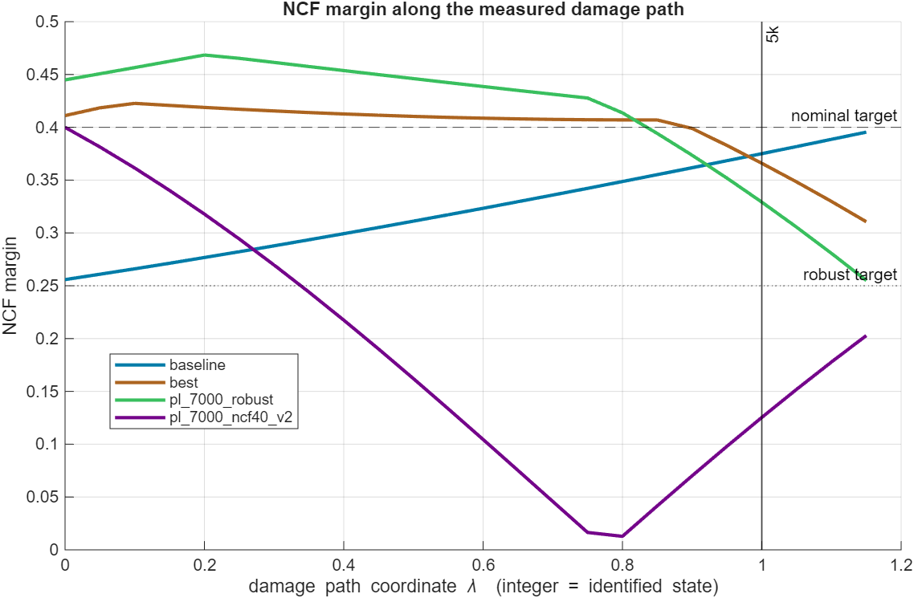
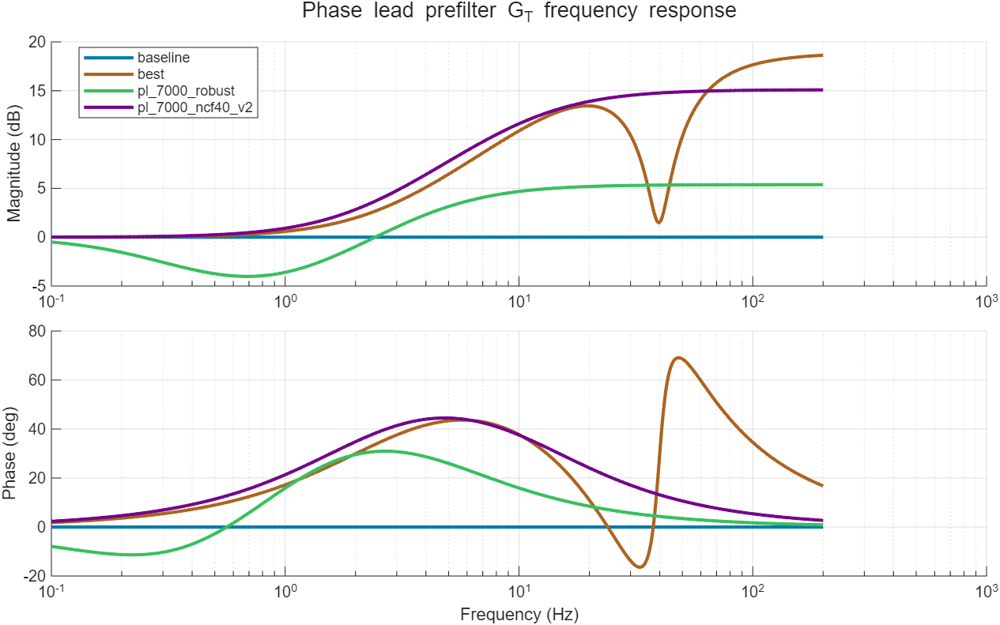
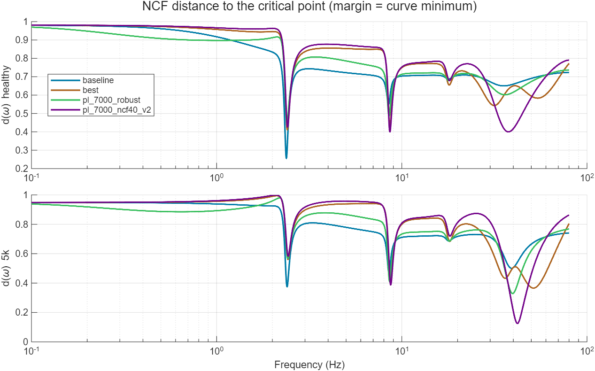
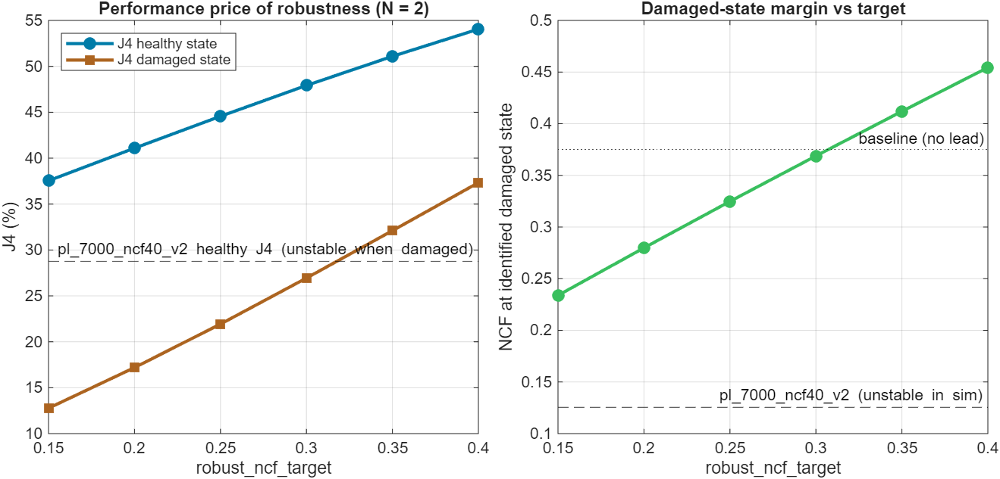
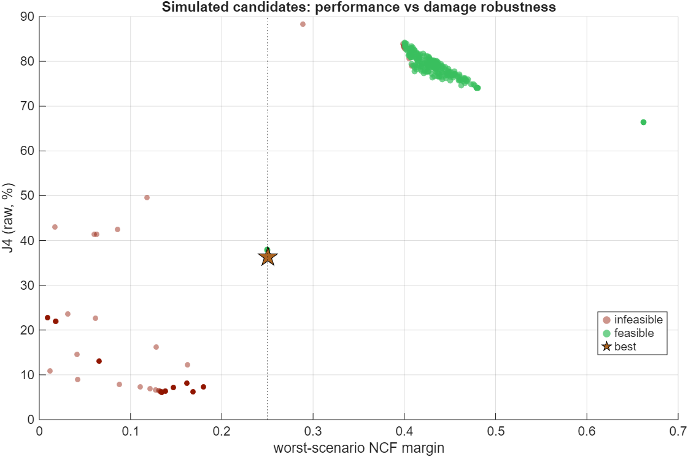

1. The problem: a good initial NCF does not survive damage
The current optimizers pick the 1-pole/1-zero lead that minimizes J4 subject
to the NCF margin of the healthy loop
num·G_T·PID·H_dc_dm·k. That constraint only sees the
initial plant. When the specimen degrades (sp1: k drops from
7201 N/mm to 5381 N/mm, 74.7 %), two things change at once:
- the force-feedback gain
fm = k·dmscales down with k — the small, benign part; and - the identified actuator plant
H_dc_dm(servo + specimen) changes shape: with the softer specimen its gain rises everywhere, up to 3.9× at 40 Hz (the oil-column/specimen resonance drops in frequency and grows in peak). This is the dominant effect and it is not captured by scaling k.
pl_7000_ncf40_v2 (healthy NCF 0.400)
reaches max‑|pole| = 1.0051 and pl_7000_ncf3 (healthy NCF
0.300, J4 15.0 %) reaches 1.0114. The baseline with no lead
stays stable and its NCF actually improves from 0.256 to 0.375.
The aggressive lead is what damage exploits.Why exactly the 1p1z lead fails
A first-order lead with section ratio r = p/z buys
asin((r−1)/(r+1)) degrees of phase at its center — but it also multiplies the
loop by r at high frequency. pl_7000_ncf40_v2 (z 2.02 Hz,
p 11.5 Hz, r ≈ 5.7) needs that ratio to lift the margin at
the 2.4 Hz structural critical point, and as a side effect its healthy NCF
minimum moves to 37.6 Hz — a point that only stays safe because the
healthy actuator gain is small there. Damage raises exactly that gain by ~4×,
and the 38–45 Hz region walks into the −1 point. In a 1p1z lead the
low-frequency phase and the high-frequency gain are the same knob; you
cannot have the phase without arming the high-frequency trap.
Note also that a simple "scale k" robustness check is misleading here: it predicts NCF ≈ 0.45 for the old lead at the damaged state while the identified damaged model gives 0.125 — and the true loop is unstable despite the positive distance to −1 (the Nyquist winding number changes; the NCF margin alone is not a stability certificate).
2. The robust design
2.1 The damage path, not just the endpoint
Both states of sp1 are identified, so the plant change is measured: Δ(ω) = Ldamaged(ω) / Lhealthy(ω). The specimen does not jump between the two states — it degrades progressively — so the optimizer constrains the whole path
L(λ, ω) = L_healthy(ω) · Δ(ω)^λ , λ ∈ {0.35, 0.7, 1.0, 1.15}(complex power via log-magnitude and unwrapped phase; λ = 1 is
exactly the identified damaged loop, λ = 1.15 adds headroom
beyond it). With several identified states the path becomes piecewise —
healthy → 5k → 3k → 1k — anchored exactly at
every identified loop (see §5). Because a real identification also has
placement error, template_warp_scenarios = [0.9 1.1] re-checks
the whole path with every template feature (in particular the damaged
actuator resonance) moved ±10 % in frequency. Two hard constraints
replace the single one:
NCF( L_healthy · G_T ) ≥ target_ncf_margin (nominal, default 0.40)
min over λ NCF( L(λ) · G_T ) ≥ robust_ncf_target (damage path, default 0.25)Stable_damaged/J4_damaged) close that gap.2.2 The filter: leads, lags, and complex-zero notches
The prefilter is G_T(s) = k_T·∏(s+z_i)/∏(s+p_i) times optional
second-order sections, in the legacy format (vHS.m consumes the saved
phase_lead_tf unchanged). Each first-order section may be a
lead (p > z) or a lag (p < z); each
optional second-order section is a notch
(s² + 2·ζ_z·ω_n·s + ω_n²) / (s² + 2·ζ_p·ω_n·s + ω_n²), ζ_z < ζ_pwith unity DC and high-frequency gain. k_T keeps the total DC gain at 1.
The idea: a lead supplies phase at the structural band; against the damaged
actuator resonance you then have two tools — a lag pulls the gain down
across a whole decade (blunt, forgiving, costs J4 broadband), a notch
cuts only the resonance band (surgical, nearly free in J4, but must be made
wide enough to survive template placement error — that is exactly what the
warp scenarios enforce). normalizePhaseLeadConfig and
buildPhaseLeadFilter were extended for lag and
notch_sections; legacy files are unaffected.
2.3 Which structure is justified? (all at nominal 0.40 / robust 0.25)
| Structure | Best found | Verdict |
|---|---|---|
| 1 first-order section | J4 = 66.4 % | One section cannot hold both constraints and performance: the optimizer degenerates to a pure lag that buys margin by throwing away tracking. |
2 first-order (lag + lead) — pl_7000_robust |
J4 = 44.9 % | Low-frequency lag (z 1.02 → p 0.24 Hz) + mid-band lead (z 0.56 → p 4.37 Hz), HF gain 1.86. Blunt but very forgiving: nearly insensitive to ±15 % template warp. The conservative choice. |
| 3 first-order | J4 = 50.3 % | No better than 2 (6-D search finds worse basins; the extra first-order section is not needed). |
1 lead + 1 notch — pl_7000_robust_notch |
J4 = 36.3 % | The winner. Lead z 2.59 → p 22.9 Hz (nearly the old 1p1z's phase shape) + notch at 39.7 Hz (ζ_z 0.087 / ζ_p 0.561) that removes exactly the band the damaged plant amplifies. Feasible including ±10 % warp scenarios. See §4. |
3. Results on the sp1 pair
Final runs at nominal target 0.40 / robust target 0.25, damage path
scenarios at λ ∈ {0.35, 0.7, 1.0, 1.15} × template warps {0.9, 1, 1.1}
(12 scenarios). Saved artifacts:
saved_results/phase_lead/pl_7000_robust.mat (lead+lag) and
pl_7000_robust_notch.mat (lead+notch, recommended).
| Design | J4 healthy | NCF healthy | worst NCF (warped damage path) | NCF at 5k (identified) | J4 at 5k | Stable at 5k | HF gain |
|---|---|---|---|---|---|---|---|
| baseline (no lead) | 88.34 % | 0.256 | 0.289 | 0.375 | 47.96 % | yes | 1.00 |
| pl_7000_robust_notch (lead+notch) | 36.30 % | 0.411 | 0.250 | 0.366 | 9.42 % | yes | 8.82 |
| pl_7000_robust (lead+lag) | 44.91 % | 0.445 | 0.250 | 0.329 | 22.70 % | yes | 1.86 |
| pl_7000_ncf40_v2 (old 1p1z) | 28.76 % | 0.400 | 0.046 | 0.125 | ∞ (diverges) | NO | 5.69 |
| pl_7000_ncf3 (old 1p1z) | 15.02 % | 0.300 | 0.089 | 0.246 | ∞ (diverges) | NO | 7.45 |
Against the three goals (lead+notch vs the old 1p1z):
- Higher initial NCF — yes: 0.411 vs 0.400 (lead+lag even reaches 0.445). The nominal constraint is barely active; the damage-path constraint does the work.
- Slower NCF reduction — yes, dramatically: the old lead falls 0.400 → 0.125 (with a dip to 0.013 at λ ≈ 0.78, i.e. instability mid-test); the lead+notch goes 0.411 → 0.366 — essentially flat until λ ≈ 0.85 — and never drops below 0.25 on the whole ±10 %-warped path. J4 at the damaged state is 9.4 % where the old lead diverges.
- Higher initial J4 performance — the remaining price is now small:
36.3 % vs 28.8 %, down from 44.9 % for the lead+lag. On this
plant initial J4 and damage robustness genuinely conflict — the old lead's J4
is bought with high-frequency gain that destabilizes the damaged loop — but
the notch shrinks the cost of resolving that conflict to ~7.5 J4 points.
The
robust_ncf_targetknob still trades further (sweep below).
3.1 Why the notch wins — and how it was made safe
The lead+lag pays J4 broadband: its low-frequency lag distorts the command exactly where the earthquake has energy. The notch instead cuts only the 38–45 Hz band where the damaged actuator resonance lives — the filter plot below shows the lead+notch (copper) tracking the old 1p1z's phase almost exactly through the structural band, then carving a −12 dB slot at 40 Hz. The record has almost no command energy there, so the healthy J4 barely notices (peak command amplification only 1.30×).
The catch, found by a fragility study: an unconstrained notch design tuned
to the raw template collapsed from NCF 0.385 to 0.235 when the template's
resonance was shifted −15 % in frequency, while the lead+lag barely
moved (0.317–0.382 over ±15 %). A narrow notch is a precision
instrument; it must not be trusted at its exact measured frequency. Hence
template_warp_scenarios: the constraint set is replicated with
the template frequency-warped (default recommendation ±10 %), which
forces the optimizer to widen the notch (ζ_p 0.50 → 0.56 with a
deeper cut) until the design holds everywhere. The shipped
pl_7000_robust_notch satisfies all 12 warped-path scenarios.
hf_gain_scenarios rows (e.g.
[2 60]) or lower center_frequency_bounds_hz(2); the
blunt lead+lag (HF gain 1.86) remains the conservative fallback.



robust_ncf_target
0.15 → 0.40 costs J4 (healthy) 37.5 → 54.1 % and buys
damaged-state NCF 0.23 → 0.45. All points are stable through the
whole damage path — pick by how much damage you expect. The lead+notch shifts
this whole frontier down by ~8 J4 points.
4. How to run it
Quick start (sp1 defaults)
>> optimize_vHS_phase_lead_robust_ncf % in control_and_HS/d_HSRuns healthy = sp1_7000 with the damage-state list {5k}, the recommended
structure (1 lead + 1 notch, template warps ±10 %), targets 0.40/0.25,
warm-started from the previous artifact, compares against
pl_7000_robust and pl_7000_ncf40_v2, and saves
pl_7000_robust_notch.mat (legacy format — select it in vHS.m as
usual; the saved phase_lead_tf already contains the notch).
Runtime ≈ 1–2 minutes. Workspace overrides, same pattern as the other
wrappers:
robust_ncf_target = 0.30; % ask for more damaged margin
section_count_override = 2; % lead+lag instead of lead+notch:
notch_count_override = 0; % 2 first-order sections, 0 notches
phase_lead_file_name_override = 'pl_7000_robust_r30';
optimize_vHS_phase_lead_robust_ncfEngine call and key options
config = struct( ...
'specimen_file', '...sp1_7000.mat', ... % healthy state
'h_dc_dm_model_file', '...tf_sp1_7000_...mat', ...
'fem_file', '...fem_sp1_7000.mat', ...
'damage_states', struct( ... % ordered, least -> most damaged
'label', {'5k'}, ...
'specimen_file', {'...sp1_5000.mat'}, ...
'h_dc_dm_model_file', {'...tf_sp1_5000_...mat'}), ...
'target_ncf_margin', 0.40, ... % healthy NCF floor
'robust_ncf_target', 0.25, ... % floor along the (warped) damage path
'template_warp_scenarios', [0.9 1.1], ...
'phase_lead_section_count', 1, ...
'notch_section_count', 1);
result = optimize_vHS_phase_lead_robust(config);Adding the future damage states (3k, 1k) when they are identified
The damage model is an ordered list, not a single pair. When a new
state has been identified (specimen k,m,c from a_specimen_id,
actuator model from sys_id.m), append one entry — nothing else
changes:
'damage_states', struct( ...
'label', {'5k', '3k', '1k'}, ...
'specimen_file', {'...sp1_5000.mat', '...sp1_3000.mat', '...sp1_1000.mat'}, ...
'h_dc_dm_model_file', {'...tf_sp1_5000_...mat', ...
'...tf_sp1_3000_...mat', ...
'...tf_sp1_1000_...mat'}), ...
'seed_phase_leads', {{'pl_7000_robust_notch.mat'}}, ... % warm start from
% the current designWhat happens internally: the damage path becomes piecewise —
healthy → 5k → 3k → 1k — anchored
exactly at every identified loop (path coordinate λ = 1, 2, 3 …),
with template_lambda_grid fractions checked inside every segment,
the >1 entries extrapolating beyond the last state, and the warp factors
applied to the whole path. The report table gains
NCF_3k / J4_3k / Stable_3k (and 1k) columns, and the degradation
plot gains an integer marker per state. Because the previous design is passed
in seed_phase_leads, the optimizer first re-checks it against the
extended path (the polish restores feasibility from a near-miss before
minimizing J4), so successive re-runs refine rather than restart. The same
list mechanism accepts damage states from other specimens too — the
constraint then reads "survive every damage trajectory measured on this
rig".
| Option | Default | Meaning |
|---|---|---|
target_ncf_margin | 0.40 | Hard NCF floor on the healthy loop. |
robust_ncf_target | 0.25 | Hard NCF floor on every damage scenario. This is the main knob (see the sweep figure). |
damage_states | empty | Ordered struct list of
identified damage states (label, specimen_file, h_dc_dm_model_file); the
damage path passes through all of them. The legacy single-state
damaged_specimen_file/damaged_h_dc_dm_model_file
options still work and become entry #1. |
template_lambda_grid | [0.35 0.7 1.0 1.15] | Entries ≤ 1: fractions checked inside every path segment; entries > 1: overshoot beyond the last identified state (1.15 → λ = n_states + 0.15). |
template_warp_scenarios | [] (use [0.9 1.1]) | Frequency-warp factors: the whole path is re-checked with every template feature moved by these factors. Mandatory in spirit when notches are enabled — it is what keeps a narrow notch honest about resonance placement error. |
phase_lead_section_count | 2 | First-order sections; each may come out lead or lag. |
notch_section_count | 0 | Second-order
notch sections (searched over frequency 5–80 Hz, depth
ζ_z/ζ_p ∈ [0.03, 1], width ζ_p ∈ [0.2, 2]; bounds configurable via
notch_*_bounds). |
section_ratio_bounds | [1/25 25] | Ratio p/z per section; values < 1 allow lag sections. |
seed_phase_leads | {} | Warm starts: phase_lead structs or saved MAT names, simulated before the screened candidates and offered to the polish. Infeasible seeds are first pulled to feasibility by a phase-1 fmincon on the analytic shortfall (no simulations), then J4 is minimized — without this an infeasible seed gets dragged deeper into infeasibility by the J4 gradient. |
template_healthy_* | '' | Reference-pair healthy files for designing a NEW specimen: the path shape comes from the reference pair, applied to the new specimen's nominal loop. |
k_scale_scenarios, extra_delay_scenarios_s,
hf_gain_scenarios | auto | Generic scenario family, used automatically when no damage state is configured (k×{0.85,0.7,0.55}, delays {0.5,1} ms, HF gain shelves ×2/×4); can also be added on top of the measured path. |
compare_phase_lead_files | {} | Saved leads to include in the report table and every plot. |
screen_sample_count / sim_budget /
polish_* | 30000 / 140 / 3×200 | Stage budgets: analytic screen → shortlisted simulations → two-phase fmincon (analytic feasibility restore, then simulated-J4 objective with analytic NCF constraints). |
plot_export_dir | '' | Export the figures as
PNG (used to build this page: docs/img). |
Designing for a NEW specimen (only the healthy state identified)
The damage template is the transferable knowledge from sp1: "this is how this class of specimen + actuator changes when it degrades". For a new specimen sp2 where only the healthy identification exists:
config.specimen_file = '...sp2_healthy.mat'; % new nominal
config.h_dc_dm_model_file = '...tf_sp2_healthy...mat';
% reference damage physics measured on sp1 (all its identified states):
config.damage_states = struct( ...
'label', {'5k'}, ... % + 3k, 1k when identified
'specimen_file', {'...sp1_5000.mat'}, ...
'h_dc_dm_model_file', {'...tf_sp1_5000...mat'});
config.template_healthy_specimen_file = '...sp1_7000.mat';
config.template_healthy_h_dc_dm_model_file = '...tf_sp1_7000...mat';With template_healthy_* set, the template becomes
Δ = Lsp1,damaged/Lsp1,healthy (pure damage physics)
applied to sp2's own healthy loop — the nominal state is sp2, the damage
direction is sp1's. Since the damage amount and the shifted
instability frequency of sp2 are unknown, keep λ up to 1.15 (or higher) and
consider adding the generic scenarios on top
(k_scale_scenarios/extra_delay_scenarios_s) for
extra insurance. As more specimen pairs get tested, their templates can be
added as additional scenarios — the constraint is "survive every template we
have ever measured".
Stable_damaged = false for any
candidate lead as a hard veto.5. New optimizer vs old first-order optimizer
| optimize_vHS_phase_lead_v2 (1p1z) | optimize_vHS_phase_lead_robust (new) | |
|---|---|---|
| Filter | N identical lead sections (equal split of one center/ratio), lead only | N independent sections, each lead or lag, plus optional second-order notches, unity DC gain |
| Constraint | NCF of the healthy loop only | NCF of the healthy loop and of every damage scenario: the piecewise measured path through all identified states, optionally frequency-warped, or the generic family |
| Stability under damage | Not checked — shipped optima are unstable on the identified damaged plant | Path constraint (winding argument) + explicit closed-loop simulation of the damaged model in the report |
| Objective | min unrounded J4 (healthy) | same |
| Search | 2-D map → boundary → zoom → fmincon | (2N+3M)-D quasi-random analytic screen (~seconds for 40k candidates) → warm-start seeds + J4-proxy-ranked simulations → multi-start two-phase fmincon (feasibility restore, then J4) |
| Evaluation core | shared —
the robust engine reuses the v2 assembled-LTI simulator and tustin-exact
analytic NCF via optimize_vHS_phase_lead_v2('helpers') | |
| Output format | identical
legacy MAT (phase_lead, phase_lead_tf, …) — vHS.m
loads either | |
| Typical runtime | ~40 s | ~80 s |
| When to use | Specimen guaranteed not to change during the test | Specimen expected to damage (this project) |
6. Beyond the phase lead — other levers for the same three goals
- Robust PID co-design. The PID ([0.15 20 0.0015 512]) is chosen
before the test and inherited by every design. The exact same scenario
machinery can wrap a (P, D) grid or a joint PID+lead fmincon — the inner
loop shapes
H_dc_dmitself, so a small PID retune may buy damaged margin far more cheaply in J4 than the prefilter can. - Second-order (complex) sections — DONE. Implemented as
notch_section_countand it delivered exactly as hoped: J4 44.9 → 36.3 % at identical robustness targets (pl_7000_robust_notch, §3.1). The warp scenarios were the missing safety ingredient discovered on the way. - Design at a detuned nominal. A one-line hedge with the existing v2
optimizer: set
k_exp_r < 1(e.g. 0.85) so the "nominal" plant sits mid-way along the expected damage path. Much weaker than the path constraint, but free. - Multi-record J4. J4 is currently El Centro-specific; making the
objective the worst J4 over 2–3 records (config hook
earthquake_type) avoids overfitting the lag placement to one spectrum. - Online λ estimate → scheduled lead (future, currently out of scope). The spectral stiffness estimator already tracks k during the test; mapping k̂ to λ and morphing between two saved robust leads (or scheduling the lag corner) would recover most of the J4 price while keeping the margin — this is the natural meeting point with the OSI/authority work once it is back in scope.
- Grow the template library. Each tested specimen adds one measured Δ(ω); constraining against all of them turns "robust to sp1's damage" into "robust to every damage mode this rig has ever produced". The config already accepts any number of scenarios.
Files: engine
control_and_HS/d_HS/utils_HS/optimize_vHS_phase_lead_robust.m,
wrapper control_and_HS/d_HS/optimize_vHS_phase_lead_robust_ncf.m,
results saved_results/phase_lead/pl_7000_robust_notch.mat
(recommended) and pl_7000_robust.mat (lead+lag fallback).
Generated 2026-07-02 with the sp1 7k/5k identification pair; regenerate the
figures by re-running the wrapper with plot_export_dir set to
docs/img.